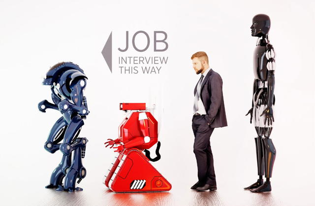

The Society for Practical Utopians
Working together to shape a brighter future for humanity
Help! Help! The Robots are Coming!
By Herb Bowie
2017 Aug 23
tags: cultural evolution, individuals

Many pundits today are predicting a future of robots equipped with artificial intelligence so powerful that they will essentially render great swaths of humanity obsolete.
Historian and author Yuval Noah Harari, for example, recently painted an interesting picture of such a tomorrow in his article for The Guardian, titled “The meaning of life in a world without work.” He foresees a world in which a universal basic income would allow the unemployable masses to spend increasing amounts of time mucking about in virtual worlds rather than doing anything useful in the real one.
Let me just make a few points concerning such imaginings.
-
To start with the prosaic – so far, there are no signs that vast quantities of human labor won’t be needed to help sustain and renew any form of human technology. Look at how much you paid for your smart phone (either directly or indirectly) and how quickly the thing goes out-of-date. This is not an anomaly in the world of technology – it is the norm. The same thing is happening behind the scenes in every enterprise on the planet, as computing systems age and teeter for years on the brink of outright obsolescence because it is too expensive to replace them with newer systems. So if you are trying to tell me that we will soon see a world where all these systems don’t require regular maintenance, repair and replacement, then I’ve got an Osborne 1 to sell you.
-
We humans have become the dominant species on our planet precisely because we are the most adaptive. And in modern times, we have learned to adapt, not just to changing external factors in our environment, but to changes wrought by our own species. After all, many of today’s jobs, such as computer programmer, did not exist a few decades ago, yet millions of humans have learned how to make their livings by learning to be productive at jobs like these. So while we may have trouble now envisioning exactly how we will adapt to changes in our future, including increasingly powerful robots, it seems short-sighted to think that we can’t successfully learn to live with such things.
-
It makes me feel positively schizophrenic to read articles such as Harari’s, predicting a world in which there is nothing for people to do, right alongside other articles about our crumbling infrastructure, and others talking about the incredible sustainability challenges we are facing on our planet. As a species, we certainly seem to have a lot of work that needs doing that isn’t getting done. I would suggest we focus on working that pile down before starting to lose sleep about what on earth we will do with ourselves if and when we run out of meaningful work.
-
Articles that talk speculatively about the emergence of a ‘useless class’ of people made redundant by new technology, wondering what their lives might be like, seem to ignore the fact that such experiments are already underway, and are not turning out particularly well. If we look at the numbers of people today who are unemployed, or underemployed, or suffering from substance abuse, or binging on media consumption, it is hard to see a rosy picture emerging of how wonderful useless lives will be in the future.
-
While I agree with Harari that many cultural elements of human belief systems are somewhat arbitrary – and are created by humanity, not handed down from on high – I don’t believe we can successfully manufacture completely synthetic belief systems just to keep useless people amused. We humans tend to create belief systems for ourselves that help us cooperate with one another in increasingly complex patterns of interactions that efficiently achieve some collective purpose, whether it be building the pyramids, sending a man to the moon, or achieving a sustainable human culture on planet Earth. We are certainly not perfect at this, and it’s easy to find examples of our miscues, and of instances where these cultural beliefs outlived their usefulness, but in the long run it’s what we tend to do. Yes, we make stuff up, but we tend to make up useful things.
-
If we are worried about what to do with useless people, it might be worthwhile to apply Eli Goldratt’s Theory of Constraints and Critical Chain thinking to the problem of how to produce useful people. Looking though this lens, one might be tempted to say that, as a species, we have applied too many resources to the task of producing more people, and not enough resources to the tasks of educating these people to be smart, informed, and adaptive members of society. One might also look at the quantities of arable land and clean, fresh water as critical resources whose constraints need to be respected and taken into account.
-
Whenever we are tempted to think of coming waves of new technology as implacable forces threatening to dwarf any individual efforts we might make, we might want to consider some of the words and deeds of those who have helped to shape the world we inhabit today.
Never doubt that a small, group of thoughtful, committed citizens can change the world. Indeed, it is the only thing that ever has.
– Margaret Mead, American Cultural Anthropologist
When you grow up you tend to get told that the world is the way it is and your life is just to live your life inside the world. Try not to bash into the walls too much. Try to have a nice family, have fun, save a little money.
That’s a very limited life. Life can be much broader once you discover one simple fact: Everything around you that you call life was made up by people that were no smarter than you and you can change it, you can influence it, you can build your own things that other people can use.
– Steve Jobs, co-founder and long-time CEO of Apple, arguably the world’s most valuable company
Imagine a world in which every single person on the planet is given free access to the sum of all human knowledge. That’s what we’re doing.
– Jimmy Wales, co-founder of Wikipedia
It’s only recently that I’ve come to understand that writers are not marginal to our society, that they, in fact, do all our thinking for us, that we are writing myths and our myths are believed, and that old myths are believed until someone writes a new one.
– Kurt Vonnegut, author of novels such as Cat’s Cradle and Slaughterhouse Five
The world is a wonderfully weird place, consensual reality is significantly flawed, no institution can be trusted, certainty is a mirage, security a delusion, and the tyranny of the dull mind forever threatens – but our lives are not as limited as we think they are, all things are possible, laughter is holier than piety, freedom is sweeter than fame, and in the end it’s love and love alone that really matters.
– Tom Robbins, author of books such as Even Cowgirls Get The Blues and Jitterbug Perfume
Tags
 Content at Practopians.org is Copyright © 2009 - 2018 by Herb Bowie except where otherwise noted
Content at Practopians.org is Copyright © 2009 - 2018 by Herb Bowie except where otherwise noted